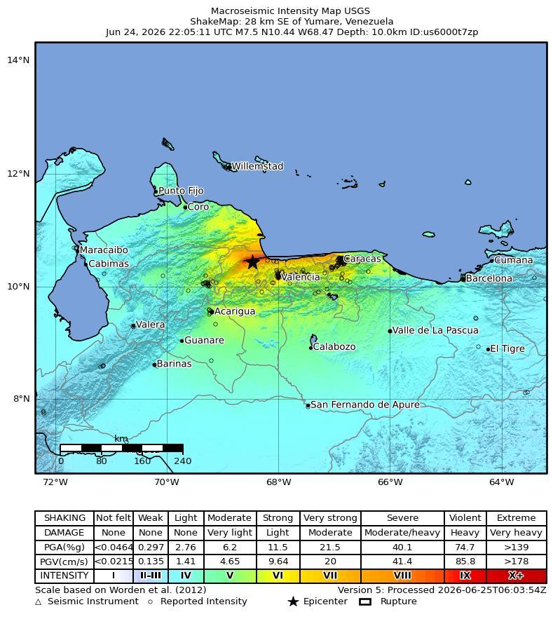
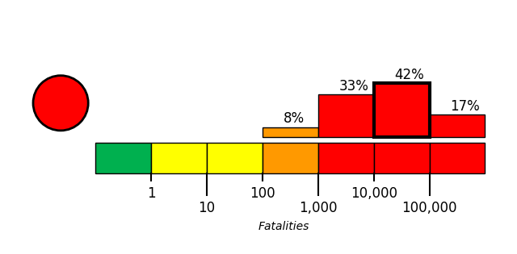
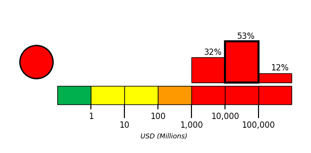

Introduction
On June 24, 2026, at approximately 11:05 local time, a magnitude 7.5 earthquake, with a depth of 10 km, struck 28 km Southeast of Yumare, Venezuela. The coordinate of epicenter of the earthquake was 10.44N, 68.47W.
Extensive diversity and complexity of tectonic regimes characterizes the perimeter of the Caribbean plate, involving no fewer than four major plates (North America, South America, Nazca, and Cocos). Inclined zones of deep earthquakes (Wadati-Benioff zones), ocean trenches, and arcs of volcanoes clearly indicate subduction of oceanic lithosphere along the Central American and Atlantic Ocean margins of the Caribbean plate, while crustal seismicity in Guatemala, northern Venezuela, and the Cayman Ridge and Cayman Trench indicate transform fault and pull-apart basin tectonics.
Along the northern margin of the Caribbean plate, the North America plate moves westwards with respect to the Caribbean plate at a velocity of approximately 20 mm/yr. Motion is accommodated along several major transform faults that extend eastward from Isla de Roatan to Haiti, including the Swan Island Fault and the Oriente Fault. These faults represent the southern and northern boundaries of the Cayman Trench. Further east, from the Dominican Republic to the Island of Barbuda, relative motion between the North America plate and the Caribbean plate becomes increasingly complex and is partially accommodated by nearly arc-parallel subduction of the North America plate beneath the Caribbean plate. This results in the formation of the deep Puerto Rico Trench and a zone of intermediate focus earthquakes (70-300 km depth) within the subducted slab. Although the Puerto Rico subduction zone is thought to be capable of generating a megathrust earthquake, there have been no such events in the past century. The last probable interplate (thrust fault) event here occurred on May 2, 1787 and was widely felt throughout the island with documented destruction across the entire northern coast, including Arecibo and San Juan. Since 1900, the two largest earthquakes to occur in this region were the August 4, 1946 M8.0 Samana earthquake in northeastern Hispaniola and the July 29, 1943 M7.6 Mona Passage earthquake, both of which were shallow thrust fault earthquakes. A significant portion of the motion between the North America plate and the Caribbean plate in this region is accommodated by a series of left-lateral strike-slip faults that bisect the island of Hispaniola, notably the Septentrional Fault in the north and the Enriquillo-Plantain Garden Fault in the south. Activity adjacent to the Enriquillo-Plantain Garden Fault system is best documented by the devastating January 12, 2010 M7.0 Haiti strike-slip earthquake, its associated aftershocks and a comparable earthquake in 1770.
Moving east and south, the plate boundary curves around Puerto Rico and the northern Lesser Antilles where the plate motion vector of the Caribbean plate relative to the North and South America plates is less oblique, resulting in active island-arc tectonics. Here, the North and South America plates subduct towards the west beneath the Caribbean plate along the Lesser Antilles Trench at rates of approximately 20 mm/yr. As a result of this subduction, there exists both intermediate focus earthquakes within the subducted plates and a chain of active volcanoes along the island arc. Although the Lesser Antilles is considered one of the most seismically active regions in the Caribbean, few of these events have been greater than M7.0 over the past century. The island of Guadeloupe was the site of one of the largest megathrust earthquakes to occur in this region on February 8, 1843, with a suggested magnitude greater than 8.0. The largest recent intermediate-depth earthquake to occur along the Lesser Antilles arc was the November 29, 2007 M7.4 Martinique earthquake northwest of Fort-De-France.
The southern Caribbean plate boundary with the South America plate strikes east-west across Trinidad and western Venezuela at a relative rate of approximately 20 mm/yr. This boundary is characterized by major transform faults, including the Central Range Fault and the Boconó-San Sebastian-El Pilar Faults, and shallow seismicity. Since 1900, the largest earthquakes to occur in this region were the October 29, 1900 M7.7 Caracas earthquake, and the July 29, 1967 M6.5 earthquake near this same region. Further to the west, a broad zone of compressive deformation trends southwestward across western Venezuela and central Colombia. The plate boundary is not well defined across northwestern South America, but deformation transitions from being dominated by Caribbean/South America convergence in the east to Nazca/South America convergence in the west. The transition zone between subduction on the eastern and western margins of the Caribbean plate is characterized by diffuse seismicity involving low- to intermediate-magnitude (M<6.0) earthquakes of shallow to intermediate depth.
The plate boundary offshore of Colombia is also characterized by convergence, where the Nazca plate subducts beneath South America towards the east at a rate of approximately 65 mm/yr. The January 31, 1906 M8.5 earthquake occurred on the shallowly dipping megathrust interface of this plate boundary segment. Along the western coast of Central America, the Cocos plate subducts towards the east beneath the Caribbean plate at the Middle America Trench. Convergence rates vary between 72-81 mm/yr, decreasing towards the north. This subduction results in relatively high rates of seismicity and a chain of numerous active volcanoes; intermediate-focus earthquakes occur within the subducted Cocos plate to depths of nearly 300 km. Since 1900, there have been many moderately sized intermediate-depth earthquakes in this region, including the September 7, 1915 M7.4 El Salvador and the October 5, 1950 M7.8 Costa Rica events.
The boundary between the Cocos and Nazca plates is characterized by a series of north-south trending transform faults and east-west trending spreading centers. The largest and most seismically active of these transform boundaries is the Panama Fracture Zone. The Panama Fracture Zone terminates in the south at the Galapagos rift zone and in the north at the Middle America trench, where it forms part of the Cocos-Nazca-Caribbean triple junction. Earthquakes along the Panama Fracture Zone are generally shallow, low- to intermediate in magnitude (M<7.2) and are characteristically right-lateral strike-slip faulting earthquakes. Since 1900, the largest earthquake to occur along the Panama Fracture Zone was the July 26, 1962 M7.2 earthquake.
References for the Panama Fracture Zone: Molnar, P., and Sykes, L. R., 1969, Tectonics of the Caribbean and Middle America Regions from Focal Mechanisms and Seismicity: Geological Society of America Bulletin, v. 80, p. 1639-1684.
More information on regional seismicity and tectonics

Building Damage
Building damage was reported as widespread after the back-to-back Venezuela earthquakes, with buildings collapsed, flattened, or damaged across Caracas and nearby areas, and many buildings also toppled in Caracas and other cities [2][3][8]. In and around Caracas, dozens of collapsed buildings were described as piles of shattered concrete and steel, while residents observed collapsed exterior walls that exposed furniture to the street, cracks along building sides, shattered entryway glass, and street debris [7][6][5]. Specific damage reports included a collapsed Bancaribe building in Caracas, a multi-story building collapse in the Los Palos Grandes area of Caracas, and “alarming situations” involving collapsed homes and buildings in Altamira, where rescue workers searched rubble [5][4][1]. Collapsed buildings with people reportedly trapped were also noted in Falcón and Tucacas, while La Guaira had damaged and destroyed buildings and rubble after the earthquakes [4][9].
Infrastructure Impact
Airport infrastructure damage was reported at Venezuela’s main or largest airport, identified across reports as Simón Bolívar International Airport, Simon Bolivar Airport in Maiquetia, Maiquetía International Airport, or the airport in Maiquetia on the coast north of Caracas [10][11][12][15][19][21][22]. Reported impacts included significant or severe structural damage, operational disruptions, safety inspections, and assessment of possible structural damage [10][16][23][25]. Multiple reports stated that the airport was closed due to damage, with some describing the closure as temporary and others stating it remained closed due to reported infrastructure or structural damage [11][12][13][14][19][20][22][24][26][27][6][28][29][30][31][32][33]. Some early visual evidence was described as social media or unverified online video showing airport damage or chaotic airport conditions [10][15][21]. Broader reports also referred to massive infrastructure damage and airport disruptions [17]. Urban rail infrastructure was reported to be out of service in the city, with Metro and rail services suspended according to multiple reports [12][13][14]. A separate report identified the Caracas Metro and the Valles del Tuy Railway as remaining closed due to structural damage [24]. Oil infrastructure was reported to have remained largely intact or not immediately affected by the tremors [18][22]. These reports stated that most or almost none of the cities with official reports of severe damage included critical oil infrastructure [18][22].
Resilience and Recovery
The earthquakes occurred in quick succession on Wednesday evening and were initially reported by Acting President Delcy Rodríguez as causing at least 32 deaths and more than 700 injuries, with La Guaira figures not yet included in that early count [34][41]. By an early Thursday update, Rodríguez reported that the toll had risen to at least 164 deaths and 971 injuries, a significant increase from the earlier figure of 32 deaths [41][42]. Emergency officials warned that fatalities could continue to rise as rescue teams accessed heavily damaged areas and searched for people trapped beneath debris, while USGS modeling indicated potential for substantially higher losses and major economic impacts [38][39][42]. Community disruption was documented in Caracas and other affected areas, where residents evacuated buildings and gathered in streets after the shaking [36]. Interior Minister Diosdado Cabello urged people to remain outside because aftershocks could further damage structures, and many people reportedly stayed outdoors for hours [37]. The twin earthquakes forced residents into the streets, suspended flights, closed schools, and left rescue teams searching damaged structures for survivors [23]. Additional reported impacts included power and mobile phone coverage losses in parts of the capital, as well as damage to and closure of Simón Bolívar International Airport, the country’s main airport [40]. Government response included emergency declarations reported at both national and regional levels: Rodríguez declared a nationwide state of emergency, while La Guaira was separately identified as a disaster zone and the worst-hit region [12][37][41]. Rescue workers and residents searched rubble for survivors, and rescue teams were reported rushing to the hardest-hit areas to free people trapped under collapsed buildings [35][15]. Rodríguez stated that the role of national emergency and civil protection authorities was to rescue people trapped under collapsed buildings or homes [41]. State television showed three children pulled alive from rubble in La Guaira, and several countries, along with the United States, offered assistance to Venezuela [37][35][3].
PAGER Estimates
USGS PAGER tool estimated the fatalities to be in the red alert level, which is most likely between 10,000 and 100,000 with a probability of 42%.
USGS PAGER tool estimated the economic loss to be in the red alert level, which is most likely between 10,000 and 100,000 million dollars with a probability of 53%.


References
- [1] dawn.com - https://www.dawn.com/news/2010745/in-pictures-widespread-destruction-after-back-to-back-earthquakes-in-venezuela
- [2] indiatoday.in - https://www.indiatoday.in/information/story/venezuela-earthquakes-twin-7-1-and-7-5-quakes-hit-caracas-among-strongest-in-a-century-2933828-2026-06-25
- [3] economictimes.indiatimes.com - https://economictimes.indiatimes.com/news/newsblogs/venezuela-earthquake-today-live-updates-7-1-magnitude-terremoto-hoy-venezuela-caracas-earthquake-news-tsunami-warning-puerto-rico-latest-updates-damage-casualties/liveblog/131983042.cms
- [4] mirror.co.uk - https://www.mirror.co.uk/news/world-news/venezuela-earthquake-airport-collapse-caracas-37344861
- [5] us.headtopics.com - https://us.headtopics.com/news/powerful-earthquakes-strike-venezuela-causing-widespread-84888812
- [6] audacy.com - https://www.audacy.com/newsradiowrva/news/world/venezuela-earthquake-caracas-7179acaee70a9c543f953852f15d4814
- [7] thestar.com.my - https://www.thestar.com.my/news/world/2026/06/25/earthquakes-shake-venezuela-capital
- [8] wlrn.org - https://www.wlrn.org/npr-breaking-news/2026-06-24/2-major-earthquakes-strike-northern-venezuela-near-caracas
- [9] eu.jacksonville.com - https://eu.jacksonville.com/picture-gallery/news/2026/06/25/venezuela-earthquakes-cause-mass-casualties-see-photos-of-damage/90689733007
- [10] dnaindia.com - https://www.dnaindia.com/world/report-venezuela-earthquake-75-and-72-magnitude-tremors-hit-west-of-caracas-heavy-casualtiies-feared-video-3214255
- [11] orlandosentinel.com - https://www.orlandosentinel.com/2026/06/24/powerful-7-1-magnitude-earthquake-hits-venezuela-collapsing-buildings-in-the-capital-of-caracas
- [12] aol.com - https://www.aol.com/articles/strong-7-1-magnitude-earthquake-225239000.html
- [13] aol.co.uk - https://www.aol.co.uk/articles/strong-7-1-magnitude-earthquake-225438281.html
- [14] aol.co.uk - https://www.aol.co.uk/articles/strong-7-1-magnitude-earthquake-225438342.html
- [15] themirror.com - https://www.themirror.com/news/world-news/fatalities-in-thousands-after-75-1904822.amp
- [16] vietnam.vn - https://www.vietnam.vn/en/dong-dat-manh-nhat-trong-hon-125-nam-tan-pha-venezuela
- [17] onenewspage.com - https://www.onenewspage.com/video/20260625/17796400/100-000-DEAD-In-Venezuela-Earthquake-M7.htm
- [18] vietnam.vn - https://www.vietnam.vn/en/hang-tram-nguoi-thuong-vong-sau-tran-dong-dat-kep-o-venezuela
- [19] rnz.co.nz - https://www.rnz.co.nz/news/world/620527/strong-earthquake-rocks-venezuela-colombia
- [20] economictimes.indiatimes.com - https://economictimes.indiatimes.com/news/international/us/did-the-first-quake-trigger-the-second-watch-video-of-the-venezuela-earthquake-that-stunned-seismologists-what-does-this-rare-double-rupture-reveal-about-the-hidden-dangers-beneath-northern-venezuela/articleshow/131995960.cms
- [21] express.co.uk - https://www.express.co.uk/news/world/2221509/venezuela-7-5-magnitude-earthquake-buildings-collapse-tsunami-warning-issued
- [22] straitstimes.com - https://www.straitstimes.com/world/strong-earthquake-rocks-venezuela-colombia
- [23] sundayguardianlive.com - https://sundayguardianlive.com/world/venezuela-earthquake-today-latest-photos-check-latest-updates-rescue-efforts-injuries-damages-missing-persons-death-toll-everything-you-need-to-know-213665
- [24] en.cibercuba.com - https://en.cibercuba.com/noticias/2026-06-25-u1-e199894-s27061-nid333334-venezuela-ruinas-imagenes-deja-devastador-terremoto
- [25] news24online.com - https://news24online.com/world/watch-5-terrifying-videos-show-building-crumbling-people-fleeing-after-two-earthquakes-hit-venezuela-in-39-seconds/871003
- [26] notizie.it - https://www.notizie.it/en/terremoto-in-venezuela-il-bilancio-delle-vittime-e-i-danni-causati-dalle-scosse
- [27] en.antaranews.com - https://en.antaranews.com/news/420477/indonesia-ready-to-deploy-rescue-team-to-earthquake-hit-venezuela
- [28] durangoherald.com - https://www.durangoherald.com/articles/powerful-7-1-magnitude-earthquake-hits-venezuela-collapsing-buildings-in-the-capital-of-caracas
- [29] newser.com - https://www.newser.com/article/7179acaee70a9c543f953852f15d4814/a-second-powerful-earthquake-strikes-venezuela-usgs-reports.html
- [30] thespec.com - https://www.thespec.com/news/world/americas/a-powerful-earthquake-hits-venezuela-swaying-buildings-in-the-capital/article_c7b512c3-06ea-59d7-94d8-aad91bf1aa73.html
- [31] yakimaherald.com - https://www.yakimaherald.com/news/nation_and_world/world/powerful-7-1-magnitude-earthquake-hits-venezuela-collapsing-buildings-in-the-capital-of-caracas/article_273771f5-7a1c-501b-b7f7-b76041922440.html
- [32] halifax.citynews.ca - https://halifax.citynews.ca/2026/06/24/a-powerful-earthquake-hits-venezuela-swaying-buildings-in-the-capital
- [33] news18.com - https://www.news18.com/world/venezuela-earthquake-today-live-updates-7-1-magnitude-terremoto-hoy-venezuela-caracas-tsunami-puerto-rico-latest-news-liveblog-ws-l-10171811.html
- [34] hindustantimes.com - https://www.hindustantimes.com/world-news/venezuela-earthquake-what-is-a-doublet-what-triggers-them-explained-dead-science-twin-quakes-101782379660528.html
- [35] livemint.com - https://www.livemint.com/news/world/venezuela-earthquake-live-venezuela-7-5-magnitude-earthquake-usgs-caracas-tsunami-warning-venezuela-news-11782345941820.html
- [36] news.laodong.vn - https://news.laodong.vn/the-gioi/dong-dat-manh-71-do-o-venezuela-kich-hoat-canh-bao-song-than-1724598.ldo
- [37] wsvn.com - https://wsvn.com/news/us-world/a-second-powerful-earthquake-strikes-venezuela-usgs-reports
- [38] sundayguardianlive.com - https://sundayguardianlive.com/world/venezuela-earthquake-today-latest-update-president-delcy-rodrguez-declares-state-of-emergency-after-twin-quakes-kill-32-injure-over-700-check-whats-open-closed-hardest-hit-state-gas-shut-more-213711
- [39] sundayguardianlive.com - https://sundayguardianlive.com/world/venezuela-earthquake-latest-news-at-least-164-dead-nearly-1000-injured-as-search-operations-continue-after-powerful-twin-quakes-watch-video-214406
- [40] irishtimes.com - https://www.irishtimes.com/world/americas/2026/06/25/venezuela-earthquakes-live-updates
- [41] rediff.com - https://www.rediff.com/news/report/two-powerful-quakes-rattle-venezuela-thousands-feared-dead-emergency-declared/20260625.htm
- [42] kpbs.org - https://www.kpbs.org/news/international/2026/06/24/at-least-32-killed-700-injured-in-2-major-earthquakes-in-venezuela-says-acting-president